Ürünü İmal Etmeden Test Edin
Simülasyon, üretmeden önce bilmektir. Yapısal, termal ve akış davranışını dijital ortamda test ederek fiziksel prototip sayısını düşürür, geç aşamada ortaya çıkan tasarım hatalarını tasarım masasında yakalar.

Autodesk'in tanımıyla simülasyon; bir tasarımın gerçek dünyadaki kuvvet ve etkilere üretilmeden önce nasıl tepki vereceğini gösterir. Girdi, parça geometrisi ile ona etki edecek yükler ve sınır koşullarıdır; çıktı ise tasarımın hangi noktada, hangi yükte yetersiz kaldığının raporudur.
Sonlu elemanlar analizi (FEA) parçayı mikro ölçekte ağa böler ve her elemanda gerilme, yer değiştirme ve emniyet katsayısını hesaplar. Hesaplamalı akışkanlar dinamiği (CFD) ise gaz ve sıvı davranışını çözer: soğutma performansı, basınç kaybı, hava direnci. Plastik enjeksiyon için Moldflow, kalıp ve malzeme kararlarını dolum öncesinde değerlendirir.
Kazancın büyüklüğü zamanlamayla ilgilidir. Tasarımın erken evresinde yapılan analiz, malzeme kalınlığını gereksiz yere artırmayı önler; geç evrede yapılan analiz ise yalnızca hatayı doğrular. Cadbim, analizi ayrı bir uzmanlık adası olarak değil, tasarım akışının içinde bir kontrol noktası olarak kurar.
Yapısal analiz (FEA)
Inventor Nastran ile statik, modal, burkulma ve yorulma çalışmaları; gerilme yığılmalarının erken tespiti.
Akış ve termal (CFD)
Autodesk CFD ile soğutma, havalandırma, basınç kaybı ve katı cisim hareketi analizleri.
Plastik enjeksiyon
Moldflow ile dolum, çarpılma ve soğuma davranışı; kalıp ve yolluk kararlarının doğrulanması.
Jeneratif tasarım
Fusion içinde yük ve kısıtlar tanımlanır; hafifletilmiş ve üretilebilir alternatifler otomatik türetilir.
FEA — Yapısal Analiz
Sonlu elemanlar analizi ile yapısal stres, deformasyon ve titreşim. Autodesk Fusion Simulation ve Nastran.
CFD — Akışkan Dinamiği
Hesaplamalı akışkanlar dinamiği. Isı transferi, hava akışı ve sıvı simülasyonu. Autodesk CFD.
Hareket Analizi
Kinematik ve dinamik analiz. Montaj seviyesinde hareket simülasyonu.
Generative Design
AI ile ağırlık optimizasyonu. Kısıtları tanımlayın, yapay zeka ideal geometriyi bulsun.
Termal Analiz
Isı dağılımı ve termal gerilme analizi. Elektronik soğutma ve imalat süreç simülasyonu.
Enjeksiyon Kalıp Simülasyonu
Plastik enjeksiyon kalıp akışı simülasyonu. Çekme, çarpılma ve kaynak hatlarını önceden tespit edin.
Çözümün her adımında devreye giren yazılım ve donanımlar.

PD&M Collection
Inventor, Vault ve tamamlayıcı araçları tek pakette sunan imalat ürün koleksiyonu.

Autodesk Fusion
Tasarım, mühendislik ve CAE analizini tek platformda birleştiren bulut tabanlı çözüm.

Autodesk Inventor
Parametrik 3B tasarımın yanı sıra yerleşik simülasyon araçları sunan mühendislik yazılımı.
Autodesk CFD
Akışkan dinamiği ve termal davranışları dijital ortamda analiz eden simülasyon yazılımı.

HP Z Workstation
Ağır simülasyon iş yüklerini karşılayan yüksek performanslı mühendislik iş istasyonları.
Beş adımlı uygulama metodolojimizle sürecin tamamını yönetiyoruz: ihtiyaç analizi, kurgu, devreye alma, yaygınlaştırma ve sürdürme.
Doğrulama Hedefleri
Hangi ürün kararlarının analizle destekleneceğini ve kabul kriterlerini netleştiriyoruz.
Model Hazırlık Standardı
Geometri sadeleştirme, malzeme kartları ve sınır koşulu şablonları oluşturuyoruz.
Korelasyon
İlk analizler fiziksel test sonuçlarıyla karşılaştırılarak model güveni kurulur.
Sürece Entegrasyon
Analiz, tasarım döngüsünün erken adımına (shift-left) yerleştirilir.
Raporlama Standardı
Karar vericilerin okuyacağı standart rapor ve arşiv düzeni kurulur.
Yüzlerce kurulumdan damıtılmış, işleyen iyi uygulama setimiz.
Mesh bağımsızlık kontrolü
Sonucun ağ yoğunluğundan bağımsızlığı doğrulanmadan karar verilmez.
Doğrulanmış malzeme kütüphanesi
Tedarikçi/test verisine dayalı malzeme kartları tek kaynakta tutulur.
Test-analiz korelasyonu
Fiziksel testle korelasyon kurulan modeller sonraki projelerde güvenle kullanılır.
Erken analiz (shift-left)
Analiz prototip sonrası değil, konsept aşamasında devreye girer; kalıp/prototip maliyeti düşer.
Parametrik tarama
Tek senaryo yerine tasarım aralığı taranır; optimum güvenle seçilir.
Sonuç arşivi & izlenebilirlik
Hangi geometri, hangi yük, hangi sonuç — yıllar sonra bile erişilebilir.
Aradığınız yanıt burada yoksa uzmanımıza doğrudan sorabilirsiniz.
Simülasyon için ayrı bir uzman istihdam etmek gerekir mi?
Analiz sonucuna ne kadar güvenebilirim?
Analiz için nasıl bir donanım gerekir?
Simülasyon fiziksel prototipi tamamen ortadan kaldırır mı?
Bu çözümü kurduğumuz sektörler ve iş akışları.
Tedarik sürecin başlangıcıdır; kurulum, lisanslama, kullanıcı eğitimi, teknik destek ve yenileme yönetimi tek muhatap üzerinden yürütülür.
Esnek Abonelik ve Lisans Modelleri
Tek ve çok kullanıcılı abonelikler, 1 ve 3 yıllık dönemler, koleksiyon avantajı — kullanım profilinize uygun planı birlikte belirliyoruz.
Yetkili Eğitim Merkezi (ATC)
Autodesk Yetkili Eğitim Merkezi olarak sertifikalı eğitimler; İzmir merkez ofisimizde sınıf ve çevrim içi programlar.
Türkçe Teknik Destek
Kurulum, lisans yönetimi ve teknik sorularınızda Türkiye'den, Türkçe, aynı gün yanıt.
Kurulum, Lisanslama ve Aktivasyon Desteği
Yazılımların kurulum, lisanslama ve aktivasyon süreçlerinin tamamında teknik destek sağlıyoruz.
Sürücü ve Uyumluluk Çözümleri
İşletim sistemlerinde sürücü kurulumları ve yazılım uyumluluğu konularında teknik çözüm üretiyoruz.
Bu alanda destek alın
Teklif, danışmanlık veya eğitim için iletişime geçin.